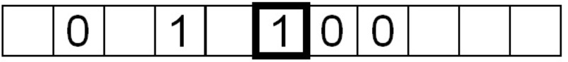
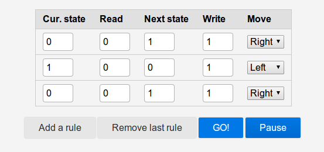

A Turing machine is a hypothetical machine thought of by the mathematician Alan Turing in 1936. Despite its simplicity, the machine can simulate ANY computer algorithm, no matter how complicated it is!

Above is a very simple representation of a Turing machine. It consists of an infinitely-long tape which acts like the memory in a typical computer, or any other form of data storage. The squares on the tape are usually blank at the start and can be written with symbols. In this case, the machine can only process the symbols 0 and 1 and " " (blank), and is thus said to be a 3-symbol Turing machine.
At any one time, the machine has a head which is positioned over one of the squares on the tape. With this head, the machine can perform three very basic operations:
1.Read the symbol on the square under the head.
2.Edit the symbol by writing a new symbol or erasing it.
3.Move the tape left of right by one square so that the machine can read and edit the symbol on a neighbouring square.
With the symbols "1 1 0" printed on the tape, let's attempt to convert the 1s to 0s and vice versa. This is called bit inversion, since 1s and 0s are bits in binary. This can be done by passing the following instructions to the Turing machine, utilising the machine's reading capabilities to decide its subsequent operations on its own. These instructions make up a simple program.
Finally, a 'blank' symbol is read, so the machine does nothing apart from read the blank symbol continuously since we have instructed it to repeat the read-write-move sequence without stopping. In fact, the program is incomplete. How does the machine repeat the sequence endlessly, and how does the machine stop running the program? The program tells it to with the concept of a machine state.